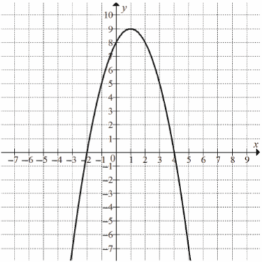

Matura podstawowa - kurs - część 29 - zadania
Jaka jest najmniejsza wartość funkcji kwadratowej
\(
f(x)=x^2+4x-3 \) w przedziale \( \langle 0, 3 \rangle \)?
A.\(-7 \)
B.\(-4 \)
C.\(-3 \)
D.\(-2 \)
C
Oblicz najmniejszą wartość funkcji kwadratowej \(f(x)=x^2-6x+1\) w przedziale \(\langle 0,1 \rangle\).
\(-4\)
Oblicz największą wartość funkcji \(f(x)=-2x^2+16x-15\) w
przedziale \(\langle -2,3 \rangle\).
\(15\)
Najmniejsza wartość funkcji \(f(x)=x^2-3x+1\) w przedziale \(\langle -1,3\rangle \)
jest równa
A.\( 5 \)
B.\( \frac{3}{2} \)
C.\( 1 \)
D.\( -\frac{5}{4} \)
D
Oblicz najmniejszą i największą wartość funkcji kwadratowej \(f(x)=x^2-6x+3\) w
przedziale \(\langle 0,4\rangle \).
\(f_{max}=3\) oraz \(f_{min}=-6\)
Różnica największej i najmniejszej wartości, jakie funkcja kwadratowa
\[f(x)=-\frac{1}{2}x^2-2x+6\] przyjmuje w przedziale \(\langle -3,k\rangle \) dla \(k\gt 0\) jest
równa \(4\frac{1}{2}\). Oblicz \(k\).
\(k=1\)
Wyznacz wartość największą funkcji \(f(x)=\frac{1}{x^2+4x-1}\) w przedziale
\(\langle 1,3\rangle \).
\(\frac{1}{4}\)
Największa wartość funkcji kwadratowej \(f(x)=a(x-2)^2-4\), gdzie \(a\ne 0\), w
przedziale domkniętym \(\langle -4,-2\rangle \) jest równa \(12\). Wyznacz najmniejszą wartość
funkcji \(f\) w przedziale \(\langle -4,-2\rangle \).
\(\frac{28}{9}\)
Najmniejszą wartością, jaką funkcja kwadratowa \(f\) dana wzorem \(f(x)=ax^2+bx+c\)
przyjmuje w przedziale \(\langle 0,4\rangle \), jest \(f(2)\). Uzasadnij, że \(a\gt 0\) i \(b\lt
0\).
Funkcja kwadratowa \(f\) przyjmuje w przedziale \(\langle 0,3\rangle \) największą
wartość dla argumentów \(0\) i \(3\). Uzasadnij, że w przedziale \(\langle -2,5\rangle \) funkcja
\(f\) przyjmuje największą wartość dla argumentów \(-2\) i \(5\).
Na rysunku przedstawiony jest fragment paraboli będącej wykresem funkcji
kwadratowej \(f\). Wierzchołkiem tej paraboli jest punkt \(W=(1,9)\). Liczby \(-2\) i \(4\) to
miejsca zerowe funkcji \(f\). 
Najmniejsza wartość funkcji \(f\) w przedziale \(\langle -1;2 \rangle \) jest równa
A.\( 2 \)
B.\( 5 \)
C.\( 8 \)
D.\( 9 \)
B
Funkcja kwadratowa jest określona wzorem \(f(x)=x^2-11x\). Oblicz najmniejszą
wartość funkcji \(f\) w przedziale \(\langle -6,6\rangle \).
\(-30\frac{1}{4}\)